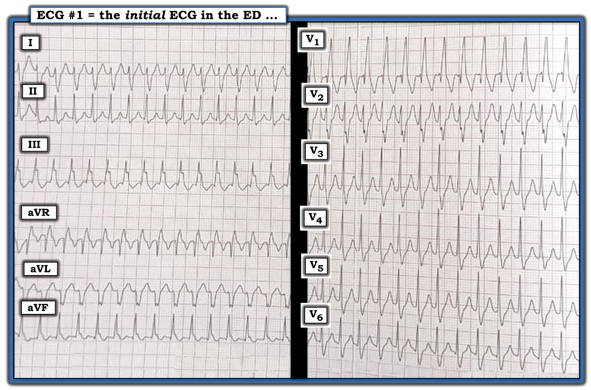
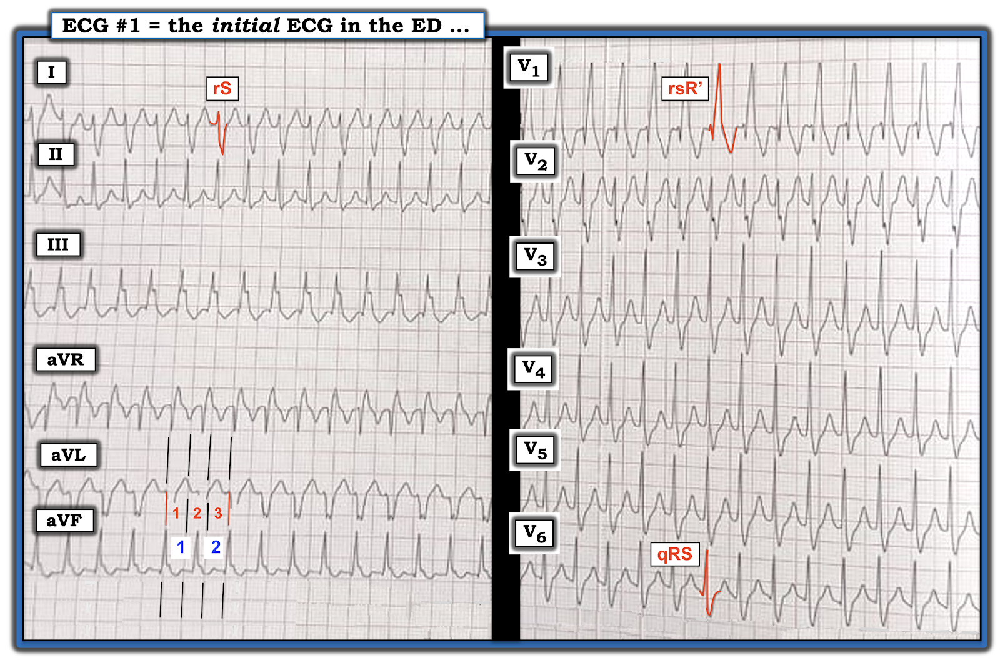
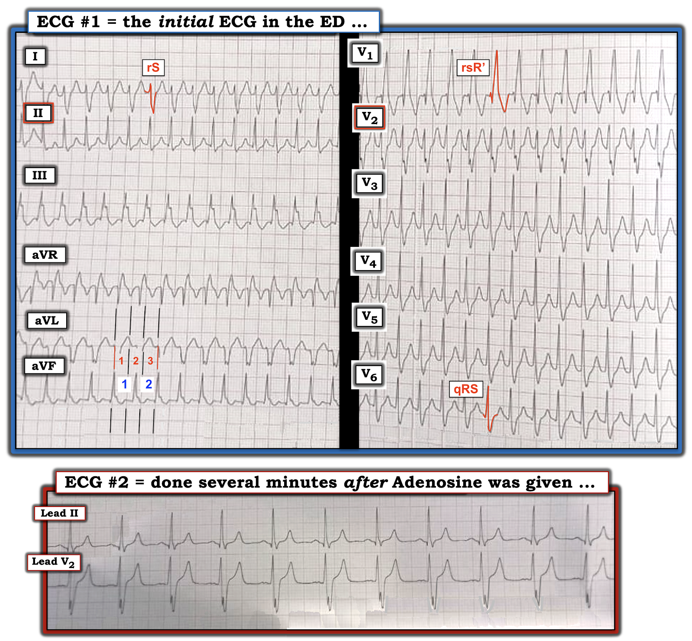

ECG Blog #301 — Nam 40 tuổi: VT hay dẫn truyền lệch hướng?
Hình 1 là điện tâm đồ được gửi đến tôi để đọc. Điện tâm đồ được ghi ở một người đàn ông khoảng 40 tuổi, trước đó khỏe mạnh — đến khoa cấp cứu (ED — Emergency Department) vì “hồi hộp đánh trống ngực”. Bệnh nhân ổn định huyết động.
CÂU HỎI:
- Đây là nhịp gì: VT hay dẫn truyền lệch hướng (Aberrancy)?


SUY NGHĨ CỦA TÔI về điện tâm đồ ở Hình 1:
Chúng ta được biết bệnh nhân trong ca hôm nay ổn định huyết động với nhịp ở Hình 1. Vì vậy, theo định nghĩa — chúng ta có ít nhất một chút thời gian để cân nhắc về nhịp này mà không cần sốc điện chuyển nhịp ngay. Theo Cách tiếp cận Ps, Qs, 3R (mà tôi ôn lại trong ECG Blog #185):
- Nhịp ở điện tâm đồ #1 nhanh và đều (Regular) — với tần số (Rate) khoảng ~190/phút (Cách dùng phương pháp Cách-Một-Nhát (Every-Other-Beat) để ước tính tần số tim này được giải thích bên dưới trong chú thích của Hình 2).
- Phức bộ QRS rộng.
- Tôi không thấy bất kỳ bằng chứng nào của hoạt động nhĩ (tức là không có sóng P — và do đó không có "Relation" (liên quan) giữa hoạt động nhĩ và hoạt động thất).
- NHẬN ĐỊNH: Ở người đàn ông khoảng 40 tuổi ổn định huyết động này — áp dụng Ps, Qs, 3Rs cho phép chúng ta mô tả điện tâm đồ ở Hình 1 là một nhịp WCT đều ( = nhịp nhanh QRS rộng — Wide-Complex Tachycardia) tần số ~190/phút, không có dấu hiệu rõ của hoạt động nhĩ. Trước khi đi tiếp — nên nhớ lại chẩn đoán phân biệt của một WCT đều chưa rõ nguyên nhân (Hình 2).

NHỮNG ĐIỂM MẤU CHỐT về chẩn đoán phân biệt nêu trên:
- Lý do tôi lặp lại VT không dưới 8 lần ở Hình 2 trước khi liệt kê khả năng khác — là để nhấn mạnh rằng xác suất thống kê để một nhịp WCT đều không có dấu hiệu rõ của hoạt động nhĩ hóa ra là VT bắt đầu từ ~80%. Theo ECG Blog #196 — xác suất này tăng lên ≥90% nếu bệnh nhân ở "một độ tuổi nhất định" (tức là từ trung niên trở lên) và có bệnh tim nền. Do đó — Hãy coi là VT cho đến khi chứng minh được điều ngược lại!
- ĐIỂM THEN CHỐT (PEARL) #1: Vì "xác suất thống kê" nêu trên — Khi đánh giá một bệnh nhân ổn định huyết động có nhịp WCT đều không có sóng P — "tư duy" của chúng ta phải là chúng ta cần chứng minh rằng nhịp này không phải VT, chứ không phải ngược lại.
- Dù vậy — 90% không phải là 100% — nên sẽ có những ca mà nhịp WCT đều hóa ra là nhịp trên thất. Chúng ta chỉ cần tiếp cận chẩn đoán phân biệt với "điểm xuất phát" là giả định một nhịp WCT đều không có sóng P xoang là VT cho đến khi chứng minh được điều ngược lại.
Trong ca hôm nay: — Tôi không nghĩ nhịp này là VT:
Bất chấp xác suất thống kê nghiêng về VT nêu trên — Hình 3 minh họa lý do tôi không nghĩ điện tâm đồ #1 là VT.
- ĐIỂM THEN CHỐT #2: Dù còn xa mới hoàn hảo — hình thái QRS có thể hữu ích để phân biệt nhịp trên thất với nhịp thất. Nhiều nhịp trên thất giống một dạng rối loạn dẫn truyền đã biết (tức là RBBB, LBBB, LAHB, LPHB, hoặc RBBB kèm LAHB hoặc LPBH).
- Ngược lại — nhịp thất ít khả năng giống bất kỳ dạng rối loạn dẫn truyền đã biết nào (vì các nhịp này khởi phát từ tâm thất, thường từ một vị trí không tiếp xúc với hệ thống dẫn truyền).
- Tất nhiên — Ngoại lệ đối với những nhận định chung trên chắc chắn có tồn tại! (tức là VT phân nhánh (fascicular VT) giống RBBB kèm blốc phân nhánh — trong khi một số nhịp SVT có thể không giống bất kỳ rối loạn dẫn truyền đã biết nào NẾU điện tâm đồ có từ trước lúc nhịp xoang cho thấy một dạng IVCD bất thường).
- NHƯNG — NẾU có hình thái QRS điển hình hoàn toàn của RBBB ở mỗi chuyển đạo trong 3 chuyển đạo MẤU CHỐT ( = các chuyển đạo bên trái I, V6 — và chuyển đạo bên phải V1) — thì nhiều khả năng nguyên nhân là trên thất. Đây chính xác là điều chúng ta thấy ở Hình 3 vì: i) Hình ảnh dẫn truyền RBBB rất điển hình (rsR') thấy ở chuyển đạo V1 bên phải, dưới dạng một sóng dương nhỏ ban đầu (sóng r) — tiếp theo là sóng s đi xuống dưới đường nền — và kết thúc bằng một "tai thỏ phải cao hơn" với phức bộ R' cao và mảnh; ii) Chuyển đạo I bên trái phù hợp với dẫn truyền LPHB (rS) — ở chỗ sóng r ban đầu mảnh được theo sau bởi một đoạn đi xuống rất dốc tới sóng S tận rộng; và, iii) Chuyển đạo V6 bên trái cũng biểu hiện hình ảnh ba pha (qRS) (ngược với hình ảnh rsR' ở chuyển đạo V1) — với sóng S tận rộng, rất đặc trưng của dẫn truyền RBBB.


ĐIỂM THEN CHỐT #3: Có xu hướng đơn giản hóa chẩn đoán phân biệt của nhịp WCT đều xuống còn 2 thực thể: VT hay dẫn truyền "lệch hướng" (aberrant).
- Như đã trình bày ở trên trong DANH SÁCH #1 (Hình 2) — sự đơn giản hóa này bỏ qua khả năng lý do QRS giãn rộng trong nhịp WCT có thể là do phức bộ QRS vốn đã rộng từ lúc bệnh nhân còn ở nhịp xoang (tức là như trường hợp có BBB từ trước). Trừ khi có sẵn điện tâm đồ cũ của bệnh nhân — có thể không có cách nào biết được NẾU lý do QRS giãn rộng trong một nhịp nhanh trên thất là: i) Một rối loạn dẫn truyền liên quan tần số (tức là dẫn truyền "lệch hướng"); hoặc, ii) Một rối loạn dẫn truyền có từ trước trên bản ghi nền.
- DANH SÁCH #1 cũng nhắc chúng ta rằng ngoài VT và SVT kèm hoặc BBB có từ trước hoặc dẫn truyền lệch hướng — các lý do tiềm năng khác khiến một nhịp nhanh có thể biểu hiện QRS giãn rộng bao gồm: i) Một loạn nhịp nhanh liên quan WPW đi xuống trước tiên qua đường phụ (xuôi dòng — anterograde); ii) Tăng kali máu; và/hoặc, iii) Một tác dụng độc nào khác gây QRS giãn rộng.
ĐIỂM THEN CHỐT #4: NẾU đánh giá hình thái QRS của chúng ta ở Hình 3 là đúng — thì nhịp WCT trong bản ghi này sẽ là một SVT đều (nhịp nhanh trên thất — SupraVentricular Tachycardia) tần số ~190/phút, không có dấu hiệu rõ của hoạt động nhĩ. Như đã bàn trong Audio Pearl (ECG-MP-64) ở PHẦN BỔ SUNG bên dưới — DANH SÁCH #2 mà tôi ưa dùng cho chẩn đoán phân biệt nhịp SVT đều gồm 4 Nguyên nhân:
- Nhịp nhanh xoang (Sinus Tach).
- Cuồng nhĩ (AFlutter).
- SVT do vào lại (tức là AVNRT hoặc AVRT).
- Nhịp nhanh nhĩ (ATach).
Trong 4 nguyên nhân này — nguyên nhân ít gặp nhất theo kinh nghiệm của tôi là nhịp nhanh nhĩ (ATach). Xem xét tần số tim có thể cho một manh mối quan trọng về nguyên nhân của một SVT đều không có dấu hiệu rõ của hoạt động nhĩ.
- Ở người lớn nằm ngửa (tức là người lớn không vừa mới gắng sức) — nhịp nhanh xoang vượt quá ~170/phút là không thường gặp. Điều này không có nghĩa là bạn sẽ không bao giờ thấy nhịp nhanh xoang nhanh như vậy ở người lớn không gắng sức — mà là gợi ý rằng tần số tim rất nhanh trong ca hôm nay (tức là ~190/phút) làm cho nhịp nhanh xoang ít khả năng hơn nhiều.
- Cuồng nhĩ (AFlutter) chưa điều trị thường biểu hiện nhất với dẫn truyền AV 2:1, trong đó tần số nhĩ của cuồng nhĩ gần 300/phút (tức là trong khoảng ~250 đến 350/phút) — và tần số thất gần một nửa con số đó, tức ~150/phút (tức là trong khoảng ~130 đến 160/phút). Tần số thất ~190/phút trong ca hôm nay sẽ hàm ý tần số nhĩ là 190 X 2 = 380/phút, nhanh hơn nhiều so với tần số nhĩ thường gặp của cuồng nhĩ.
- Từ những điểm này — có thể thấy rằng khi tần số của nhịp SVT đều không quá 150-160/phút — bất kỳ thực thể nào trong DANH SÁCH SVT đều có thể là nguyên nhân. Tuy nhiên, khi tần số thất lớn hơn ~170/phút (như ở Hình 3) — thì nhịp SVT vào lại trở nên có khả năng hơn nhiều!
ĐIỂM THEN CHỐT #5: Trên thực tế — NẾU nhịp ở Hình 3 hóa ra là VT — thì nhiều khả năng đó là VT phân nhánh (Fascicular VT). Nhận thức được điều này có ý nghĩa lâm sàng quan trọng.
- Như đã nhấn mạnh trong ECG Blog #197 — Khoảng 10% tất cả các nhịp VT thuộc nhóm nhịp VT vô căn, trong đó VT xảy ra khi không có bệnh tim cấu trúc nền.
- VT vô căn hay gặp hơn ở nhóm người trưởng thành trẻ tuổi, trước đó khỏe mạnh — phù hợp với đặc điểm của bệnh nhân trong ca hôm nay.
- VT phân nhánh là một trong 2 dạng VT vô căn thường gặp nhất. Về hình thái — phức bộ QRS trong VT phân nhánh (như tên gọi đã ngụ ý) có xu hướng giống hình ảnh RBBB kèm hoặc blốc phân nhánh trái trước hoặc blốc phân nhánh trái sau (tức là hình ảnh blốc "hemi-fascicular" (phân nhánh)).
- VT phân nhánh đáp ứng tốt đến bất ngờ với Verapamil tĩnh mạch (IV). Đôi khi — nó cũng có thể đáp ứng với Adenosine, nhưng Verapamil tĩnh mạch là thuốc được lựa chọn cho VT phân nhánh đã biết. Ngược lại — Verapamil chống chỉ định trong điều trị VT liên quan sẹo hoặc VT do thiếu máu cục bộ.
- ĐIỀU CỐT LÕI: Tôi cho rằng nhịp trong ca hôm nay nhiều khả năng nhất là một nhịp SVT vào lại — vì hình thái QRS rất gợi ý (như thể hiện ở Hình 3) hoàn toàn phù hợp với dẫn truyền RBBB điển hình. Nhưng nếu nhịp này hóa ra là VT — sự giống với dẫn truyền RBBB/LPHB sẽ gợi ý mạnh một VT phân nhánh. Do đó — Verapamil tĩnh mạch sẽ là thuốc tôi chọn, vì thuốc này là điều trị hàng đầu (1st-line) cho cả nhịp SVT vào lại lẫn VT phân nhánh.
- Adenosine tĩnh mạch được dùng trong ca hôm nay là một lựa chọn thay thế hoàn toàn phù hợp — vì thuốc này nhìn chung an toàn — rất hiệu quả trong việc cắt các nhịp SVT vào lại — và đôi khi cũng có thể chuyển nhịp VT phân nhánh.
===============================
KẾT LUẬN CỦA CA HÔM NAY:
Bệnh nhân trong ca hôm nay được điều trị bằng Adenosine tĩnh mạch. Dải nhịp 2 chuyển đạo ở Hình 4 cho thấy kết quả của điều trị này.
CÂU HỎI:
- Adenosine tĩnh mạch có hiệu quả chuyển nhịp không?
- Nguyên nhân của QRS giãn rộng trên bản ghi ban đầu là gì?


TRẢ LỜI:
Đáng tiếc — tôi không có điện tâm đồ 12 chuyển đạo ghi sau khi tiêm Adenosine tĩnh mạch để trình bày. Dù vậy — mặc dù tôi rất muốn có dải nhịp chuyển đạo V1 (thay vì chuyển đạo V2) — tôi tin rằng điện tâm đồ #2 ở Hình 4 xác nhận nhận định của tôi rằng nhịp WCT đều trên bản ghi ban đầu là nhịp trên thất (dưới dạng một nhịp SVT vào lại), trong đó lý do QRS giãn rộng là blốc nhánh có từ trước.
- Mặc dù chúng ta không có chuyển đạo theo dõi bên trái (tức là chuyển đạo I hoặc V6) — và không có chuyển đạo theo dõi V1 — bản ghi sau Adenosine ( = điện tâm đồ #2) cho thấy chuyển về nhịp xoang với QRS vẫn giãn rộng và hình thái QRS ở các chuyển đạo II và V2 gần như giống hệt hình thái QRS ở chính các chuyển đạo này trong lúc WCT!
- T.B. (P.S.): Xin nhấn mạnh rằng Adenosine tĩnh mạch tác dụng nhanh — tác dụng chống loạn nhịp thường hoàn tất trong 1-2 phút sau khi tiêm. TỐT NHẤT là chạy dải nhịp in giấy liên tục trong suốt khoảng ~2 phút sau khi tiêm Adenosine — vì nguyên nhân của rối loạn nhịp thường sẽ lộ rõ trong quá trình chuyển về nhịp xoang.
============================
Lời cảm ơn: Tôi xin cảm ơn M Shah (từ Srinagar, Ấn Độ) về ca bệnh và bản ghi này.
============================
==============================
Các bài ECG Blog liên quan đến ca hôm nay:
- ECG Blog #185 — Ôn lại hệ thống đọc nhịp của tôi, dùng Cách tiếp cận Ps, Qs & 3R.
- ECG Blog #210 — Ôn lại phương pháp Cách-Một-Nhát (hoặc Cứ-Mỗi-Ba-Nhát) để ước tính tần số tim nhanh — và bàn về một ca khác có nhịp WCT đều.
- ECG Blog #220 — Ôn lại chi tiết chẩn đoán phân biệt trong "Danh sách #1" các nguyên nhân của WCT đều ( = nhịp nhanh QRS rộng — Wide-Complex Tachycardia).
- ECG Blog #196 — Ôn lại một ca khác có nhịp WCT đều.
- ECG Blog #197 — Ôn lại khái niệm VT vô căn, trong đó VT phân nhánh là một trong 2 dạng thường gặp nhất.
- ECG Blog #204 — Ôn lại chẩn đoán điện tâm đồ các blốc nhánh (RBBB/LBBB/IVCD).
- ECG Blog #203 — Ôn lại chẩn đoán trục trên điện tâm đồ và các blốc phân nhánh. Để ôn lại hình thái QRS trong các blốc hai phân nhánh (RBBB/LAHB; RBBB/LPHB) — Xem video ECG Media Pearl #21 trong bài blog này.
- ECG Blog #211 — Ôn lại chi tiết TẠI SAO dẫn truyền lệch hướng xảy ra (và tại sao lệch hướng dạng RBBB là dạng thường gặp nhất).
- ECG Blog #250 — Ôn lại chi tiết chẩn đoán phân biệt trong "Danh sách #2" các nguyên nhân của SVT đều ( = nhịp nhanh trên thất — SupraVentricular Tachycardia).
=======================
PHẦN BỔ SUNG #2 (ngày 3 tháng 5 năm 2022):
Tôi xin cảm ơn JJ vì bình luận — trong đó bạn ấy nêu ra rằng "có thể thấy một dạng điện thế luân phiên nào đó ở các chuyển đạo V3,V4".
Tôi đồng ý. Tôi ôn lại chủ đề điện thế luân phiên trong ECG Blog #83 — trong đó tôi nhấn mạnh định nghĩa của hiện tượng này = "sự thay đổi từ nhát này sang nhát khác ở bất kỳ một hoặc nhiều phần nào của bản ghi điện tâm đồ — có thể xảy ra cách một nhát — hoặc theo một tỷ lệ lặp lại khác (3:1, 4:1, v.v.)."
- Các chuyển đạo V3,V4 có cho thấy sự thay đổi chiều cao sóng R — không hoàn toàn theo kiểu cách một nhát — nhưng quả thực theo một tỷ lệ lặp lại.
- Dấu hiệu điện thế luân phiên hay gặp nhất ở nhịp SVT vào lại (đặc biệt khi có đường phụ) — nhưng trong những trường hợp hiếm, hiện tượng này đã được báo cáo ở VT đơn dạng. Vì vậy thấy điện thế luân phiên ủng hộ (nhưng không chứng minh) nguyên nhân trên thất.
Một lần nữa xin cảm ơn JJ vì nhận xét này!
=======================
PHẦN BỔ SUNG #1 (ngày 22 tháng 4 năm 2022):
Tôi đã bổ sung bên dưới, từ các bài Blog trước, một loạt tài liệu giảng dạy về đánh giá WCT đều — và những điều cơ bản về dẫn truyền lệch hướng.


============================

ECG Media PEARL #28 (4:45 phút Video) — Ôn lại TẠI SAO một số nhát đến sớm và một số nhịp SVT được dẫn truyền Lệch hướng (và tại sao dạng dẫn truyền lệch hướng thường gặp nhất biểu hiện hình thái RBBB).
- BẤM VÀO ĐÂY — để tải bản PDF của tệp 6 trang này về dẫn truyền lệch hướng.


ECG Media PEARL #64 (10:50 phút Audio) — Ôn lại DANH SÁCH #2: Các nguyên nhân thường gặp của nhịp SVT đều.
==============================